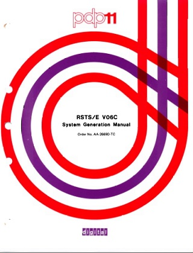

 Most of my experiences with RSTS were with versions 5 and 6 on a PDP 11/45. So I thought that it would be nice if I could set up a RSTS V5 or V6 system for my PDP 11/70 emulator. I assumed that this would be a simple enough task.
I did some reading of release notes and discovered that V6 was the first RSTS version to support the PDP 11/70, and also to be able to boot from a non-zero drive unit - ie DK2 instead of DK0. I didn't really need full PDP 11/70 support but I have found that many PDP operating systems prefer or require a zero disk unit number. As a result zero drive numbers have become a premium on my emulated system - so V6 seemed preferable to V5.
I looked around and managed to find a V6C installation tape for download at RSTS.ORG. Interestingly I could find no other V5 or V6 distributions anywhere. I did find some old postings from other people who expressed a similar desire to find one.
I grabbed the one V6C tape I could find and began an install to an RK05 disk image using SIMH. It let me initialize the disk but when I went to copy files onto it is failed with a disk index error.
Option: COpy INIT bug - bad disk index Fatal RSTS/E system initialization error! Option:
Hmmm I thought, I'm doing something wrong. So I checked the manual and the examples there showed nothing different to what I was doing. I experimented with doing things in a different order, different types of output disk, and different SIMH machine configurations. None of the things I tried seemed to work.
I contacted Brett Bump from RSTS.ORG and asked about the error. He advised that the tape copy I was using had always had this problem... as far back as 1984 when it generated the same error on a real PDP 11/45. Ouch!
So I repeated my earlier web searches for a RSTS V5 or V6 distribution or disk image. Nothing. In deperation I posted to alt.sys.pdp11 and asked if anyone out there had one. I have not yet received any response to that. I also noticed a photo of a DECTape V6 distribution at the Wolford Witch Project so I fired off an email to ask about obtaining a copy of that, but sadly no response. Even if there was still an intact tape somewhere there was probably going to be a real battle to find hardware to read it.
Reconsidering the one distribution tape I had I wondered if the tape problems could be minor - perhaps with just a bit or two flipped from what they should be. I thought if I looked at the code maybe I could see if there was an obvious problem, and even if not perhaps I could work around the fault and manually cause it to copy the files I needed. After all it only had to successfully install RSTS once.
Using SIMH I examined the failing installation code and could see that it was indeed checking some sort of device index at the point of the error message, but because the value was negative it was triggering the error that I was seeing. I examined the code further and determined that for an RK05 the device index should be 6, which I validated after some experimentation. However even by patching in the correct index value other types of strange errors resulted.
I wondered if I could work around the problem by using a RSTS V7 installation to read the RSTS V6 tape, after all RSTS V7 is the closest thing I could find to the failing code. I tried a number of test set ups but this approach never looked like working.
Going back to debugging the failing V6 code I managed to find the command dispatch routine - this was important for understanding what the code was trying to do. Here I could see where a different routine was being called for each of the possible installation commands. Using this it was possible to trace and compare the operation of each individual command. Most worked by calling a common subroutine with a differnt parameter block. Oddly the failing copy routine did not use the common subroutine. The command dispatch is implemented as a JMP instruction to index into a jump table with R0 as an offset for each different command:
Option: COpy Breakpoint, PC: 031176 (JMP @36370(R0)) sim>
I wondered if I could somehow use the V7 code to understand more deeply what was going on - so I looked in the V7 installation for a similar command dispatch routine. After much searching I determined that V7 is structured completely differently and has no equivalent dispatch or jump table. Further it appeared that the V7 copy routine is rolled into a common subroutine with other commands unlike the V6 code. Perhaps this meant that the V6 command table was simply corrupt? However my exploration down that path yielded nothing useful.
During my code exploration I had disassembled a lot of code and it occured to me to try searching for a subroutine which seemed to have similar input registers and do similar initialization to the working disk initization routine. I found one - which was similar enough that it even called some of the same subroutines, including one to get the date and time. This is something that some of the commands like disk INitialise and COpy do. However there was nothing to reference this orphaned code, and in any case it would not run successfully when I tried to manually execute it.
A few days later I was tracing the code again and determined that the disk COpy routine really started to go wrong when it jumps to an address at 124000. The code there immediately expects to use register R4 which has not previously been initialized. I experimented with various options, maybe R4 was supposed to be a different register, or perhaps address 124000 was corrupted with the lower byte being zeroed. After playing around with various permutations I realized that the code I had earlier suspected of being the COpy code was located at address 123000, exactly one tape block in length away. I immediately grabbed a binary file editor and inserted a dummy tape block before the code at 123000 - relocating it to address 124000.
Start of code for disk INitialise which works and which is similar in function to disk Copy:
sim> ex -m 104002-104100 104002: MOV #12,R0 104006: MOV #113210,R2 104012: MOVB (R1)+,(R2)+ 104014: BEQ 104024 104016: SOB R0,104012 104020: CLRB 113211 104024: JSR PC,@#43620 104030: CLRB 42677
Similar orphaned code elswhere in memory at address 123000:
sim> ex -m 123000-123100 123000: MOV #12,R0 123004: MOV #135432,R2 123010: MOVB (R1)+,(R2)+ 123012: BEQ 123022 123014: SOB R0,123010 123016: CLRB 134433 123022: JSR PC,@#43620
Failing code called by disk COpy at address 124000 (uses R4 which has not been set)
sim> ex -m 124000-12410 124000: MOV R2,52(R4) 124004: JSR PC,@#47726 124010: MOV R0,54(R4) 124014: JSR PC,126104 124020: JSR PC,125462 124024: JSR PC,@#46774
Success! Adding the dummy tape block relocated the above orphaned code to a memory location now invoked by the COpy command, which worked and copied files without error. Yipee! As a minor downside the previously working disk INitialise command now failed with errors about a file called BADB.SYS missing. I used the V7 installation tape to initialize a disk and then the V6 COpy command to put files onto it. It looked like I might actually be able to get an installation working.
But alas the next step to build the key RSTS.SIL operating system load image failed. When reviewing the installation log it appeared that the Macro assembler used to build the image had simply not produced any output object files. No errors or messages were reported. One possibility was that the disk initialized by V7 was causing some sort of problem for the V6 system.
So it was time to go back and find out what I had broken with the disk INitialise routine. By reviewing disassembly listings I determined that when I had added my dummy tape block I had inadvertantly relocated other code which had previously worked. By moving my inserted dummy tape block to a different position I was get both disk INitialise and disk COpy to work.
So back to building my RSTS V6 system files. Still no success, the Macro assembler would not produce any files required for the build of RSTS.SIL - even though my own test Macro files all worked perfectly.
Figuring that perhaps the MACRO assembler had been corrupted I took all of the V6 source files to a RSTS V7 system and tried to build the files there. Unfortunately this had exactly the same problem - no output files and no error messages. How could that be?
I checked that my RSTS V7 system could properly build itself from its own source files. It did at least confirming that the Macro assembler there was fine. I began comparing the source macro files from V6 and V7. They have some parts in common but others are very different - as you would expect with files from different versions.
By experimenting with dummy input files I got to a point where I convinced myself that the problem was in a particular source file called KERNEL.MAC. When comparing V6 file differences with the V7 KERNEL.MAC I noticed that V6 contained an incomplete defintion for a macro - essentially the last part of the multi-line definition was missing. When I corrected that by including content borrowewd from the V7 source the V6 modules built successfully. I was able to generate the V6 RSTS.SIL image file and go on to complete the installation of RSTS V06C-03.
It appears that when the RSTS macro assembler encounters a multi-line macro without an end it assumes all of the remaining source file is part of the definition. At least until something overflows and it crashes without displaying any indication of error. My V6 Macro assembler was not corrupt - just the macro in the file KERNEL.MAC.
I decided to see if I could edit the missing section of the KERNEL.MAC macro directly into the installation tape. I doubt it is a coincidence that the section I had to insert was at the end of a tape block, and was exactly one tape block in length.
I think we can safely say that the installation tape has at least two completely missing blocks.
While comparing files I noticed another difference - the heading of another file called COMMON.MAC is missing it's copyright statement - I'm going to guess it is about one block in length and appears at the start of a tape block. I didn't bother correcting this as so far it hasn't caused any problems.
With just two insertions of tape blocks the V6 installation tape now allows me to completely install and configure a working RSTS V06C-03 system. It runs like a charm even though I will never completely trust it, as there is no realistic way to detect when random bits are missing. If any vital part not recoverable from another source had been zapped then I suspect RSTS V6 would have been lost forever.
As it stands I am unaware of any other working RSTS V5 or V6 systems. Oddly most of the V5 and V6 documentation is still available on bitsavers, just none of the distribution tapes.
It is nostalgic to look at this system and consider the different era which it is from. Lots of programmers cut their teeth in similar enviroments. I am hopeful that I can set the system up so that the system utilities written which are written in Basic can be viewed to give a greater understanding of how it was all put together.
I hope that you take the time to boot up and run a copy of RSTS V06C-03 (boot rk2 at http://skn.noip.me/pdp11/pdp11.html). Maybe even log into 11,70 with a password of PDP and play a game of ACEY.BAS to see how long it takes to win $500.
Paul Nankervis
paulnank@hotmail.com
http://skn.noip.me/pdp11/
BOOT> boot tm1
Enabling only console, disks, and tapes.
RSTS V06C (MT1)
Option: DS
13-Mar-76?
06:42 AM?
Disk? DK0
Pack ID? SYSGEN
Pack cluster size? 1
SATT.SYS base? 0
MFD password? SYSTEM
MFD cluster size? 8
PUB, PRI, or SYS? SYS
Library password? SYSTEM
Library UFD cluster size? 8
Date last modified? Y
New files first? N
Use previous bad block info? N
Format? N
Patterns? 1
Proceed (Y or N)? Y
Pattern # 1
Option: DS
13-Mar-76?
06:42 AM?
Disk? DK2
Pack ID? VIXEN
Pack cluster size? 1
SATT.SYS base? 0
MFD password? SYSTEM
MFD cluster size? 8
PUB, PRI, or SYS? SYS
Library password? SYSTEM
Library UFD cluster size? 8
Date last modified? Y
New files first? N
Use previous bad block info? N
Format? N
Patterns? 1
Proceed (Y or N)? Y
Pattern # 1
Option: CO
13-Mar-76?
06:43 AM?
To which disk? DK0
Enabling only console, disks, and tapes.
RSTS V06C (DK0)
Option: IN
SIL? SYSGEN
Rebooting . . .
RSTS V06C (DK0)
Option: HA
HARDWR suboption? HE
New AC line hertz? 50
HARDWR suboption?
1 change being made.
Rebooting . . .
RSTS V06C (DK0)
Option: RE
13-Mar-76?
06:43 AM?
Disk? DK0
Clean? Y
Disk is being cleaned - wait ...
REFRESH suboption? CH
SWAP.SYS changes? Y
Size? 228
Base? 0
SWAP0.SYS changes? N
SWAP1.SYS changes? N
SWAP3.SYS changes? N
OVR.SYS changes? N
ERR.SYS changes? N
BUFF.SYS changes? N
CRASH.SYS changes? N
Other files? N
REFRESH suboption?
Option: DE
No defaults are currently set
You currently have: JOB MAX = 2, SWAP MAX = 16K.
JOB MAX or SWAP MAX changes? Y
New JOB MAX? 2
New SWAP MAX? 28
You currently have: JOB MAX = 2, SWAP MAX = 28K.
JOB MAX or SWAP MAX changes? N
Run Time System? RT11
Error message file? ERR
Installation name? Vixen
Memory allocation table:
0K: 00000000 - 00117777 ( 20K) : EXEC
20K: 00120000 - 00137777 ( 4K) : RTS (RT11)
24K: 00140000 - 03777777 ( 488K) : USER
512K: 04000000 - End : NXM
Table suboption?
You currently have crash dump disabled.
Warning - CRASH.SYS file of 24 blocks is not available
Crash dump? N
Magtape labelling default (none)? DOS
Preferred clock (L)?
Date format (NUMERIC)? AL
Time format (24-HOUR)? AM
Power fail delay (1)?
Option: ST
You currently have: JOB MAX = 2, SWAP MAX = 28K.
JOB MAX or SWAP MAX changes? N
Any memory allocation changes? N
You currently have crash dump disabled.
13-Mar-76?
06:47 AM? 6:42
BUFF.SYS not found or too small - DECtape disabled
DF0: disabled - no RF: controller
DS0: disabled - no RS: controller
DS1: disabled - no RS: controller
DM0: disabled - no RM: controller
DM1: disabled - no RM: controller
DP0: disabled - no RP: controller
DP1: disabled - no RP: controller
DR0: disabled - no RR: controller
DR1: disabled - no RR: controller
DB0: disabled - no RB: controller
DB1: disabled - no RB: controller
LP0: disabled - no LP0: controller
MM0: disabled - no TU: controller
MM1: disabled - no TU: controller
DT0: disabled - no TC: controller
DT1: disabled - no TC: controller
DX0: disabled - no RX0: controller
DX1: disabled - no RX0: controller
18 devices disabled
?Can't find file or account
.R MT1:CREATE
^C
HELLO 1/2
Password:
1 other user is logged in under this account
.
.ASSIGN MT1: .DOS
.ASSIGN MT1: IN
.R IN:PIP.SAV
*SY:$*.*<232>=IN:$LOGIN.SAV,$LOGOUT.SAV,$PIP.SAV
*SY:$*.*<104>=IN:$UTILTY.SAV
*SY:$*.*<104>=IN:$MACRO.SAV,$CREF.SAV,$LINK.SAV
*SY:$*.*<104>=IN:$SILUS.SAV,$HOOK.SAV,$SYSGEN.SAV/NOREW
*SY:$*.*<124>=IN:$SYSBAT.SAV
*SY:$*.*<104>=IN:$ONLPAT.SAV
*DK:$*.*<40>=IN:$ERR.STB,$PIPSAV.TXT/NOREW
*^C
.DEASSIGN IN
.DEASSIGN MT1:
.R LOGOUT
Confirm: Y
Saved all disk files; 357 blocks in use
Job 2 User 1,2 logged off KB1 at 13-Mar-76 06:42 AM
1 other user still logged in under this account
System RSTS V06C-03 Vixen
Run time was 0 seconds
Elapsed time was 0 minutes
Good morning
**13-Mar-76**
Beginning of RSTS/E system generation.
Questions come in long and short forms.
If you are familiar with them, answer
"S" for short; otherwise, answer "L" for
long form.
Form ? #S #
Same system ? #Y #
Distribution medium ? #MT#
Output medium ? #MT# DK
Pack ID ? #??# VIXEN
Delete files ? #NO#
LP for SYSGEN ? *NO*
Generate monitor ? #Y # Y/L
Monitor name ? #RSTS#
Monitor patching ? #??# N
Save RT11.RTS and PIP.SAV ? #Y #
Generate BASIC-PLUS ? #Y #
BASIC-PLUS RTS name ? #BASIC#
BASIC-PLUS patching ? #??# N
Now you must specify the hardware con-
figuration on which this RSTS/E system
will run.
KL11,LC11,DL11A,DL11B's ? *01*
DL11C, DL11D's ? *00*
DC11's ? *00*
DL11E's ? *00*
DJ11's ? *00*
DH11's ? *00*
DZ11's ? *00*
Pseudo keyboards ? #04#
Multi-terminal service ? #Y #
Echo control ? #Y #
RC11/RS64's ? *NO*
RF/RS11's ? *NO*
RS03/RS04's ? *00*
RK05's ? #08#
Overlapped seek ? *Y * N
RK06's ? *00*
RP02/RP03's ? *00*
RM03's ? *00*
RP04/RP05/RP06's ? *00*
TU16/TE16/TU45's ? *00*
TU10/TE10/TS03's ? #08#
DECtapes ? *00*
Printers ? *00*
RX01's ? *00*
CR11/CM11 card reader ? *NO*
CD11 card reader ? *NO*
P.T. reader ? *NO*
P.T. punch ? *NO*
DMC11's ? *00*
2780 support ? #NO#
Maximum jobs ? #10# 31
Small buffers ? #359# 400
System wide logicals ? #10#
Monitor statistics ? #NO#
FIP buffering ? #Y #
Resident disk handling ? #Y #
Resident send/receive ? #NO# Y
Resident simple SYS calls ? #NO# Y
Resident file delete/rename ? #NO# Y
Res. login/attach/attribute ? #NO# Y
Resident catalog/lookup ? #NO# Y
The following questions deal with the
BASIC-PLUS run-time system
FPP ? *NO*
FIS ? *NO*
Math precision ? #02# 4
Log functions ? #Y #
Trig functions ? #Y #
Print using ? #Y #
Matrices ? #NO# Y
String arithmetic ? #NO#
The system generation dialog is finish-
ed. If you have any special requirements
which require editing the generated file
CONFIG.MAC(system configuration file) or
SYSGEN.CTL(batch control file) you may
do it now. When ready type "R SYSBAT".
.R SYSBAT
SYSGEN batch processing has started.
If any problems develop during the batch
process it may be aborted by typing
"Control/C". To restart type "R SYSBAT".
^C
HELLO 1/2
Password:
1 other user is logged in under this account
.
.SIZE 24
MOUNT AP-2773F-BC OR AP-2772F-BC ON A MAGTAPE DRIVE
WITH NO "WRITE RING" AND SET TO "ON LINE"
Mount MT1:"SYSGNF"-write locked
Unit ? 0
.ASSIGN MT1: .DOS
.ASSIGN MT1: TAPE
.R PIP.SAV
**.*<40>=TAPE:$COMMON.MAC
**.*=TAPE:$*.MAC/HALT/NOREW
**.*=TAPE:$*.OBJ/HALT/NOREW
**.*=TAPE:$*.SAV/HALT/NOREW
*ODT.SAV<60>/RE
*DEFALT.SAV<60>/RE
**.*=TAPE:$*.STB/HALT/NOREW
*^C
Dismount MT1:
.DEASSIGN TAPE
.DEASSIGN MT1:
.ASSIGN SY: IN
.R PIP.SAV
*TBL.OBJ,TTDINT.OBJ,TTDVR.OBJ/DE
?Can't find file or account - file TBL .OBJ - continuing
?Can't find file or account - file TTDINT.OBJ - continuing
?Can't find file or account - file TTDVR .OBJ - continuing
*TBL.LST,TTDINT.LST,TTDVR.LST/DE
?Can't find file or account - file TBL .LST - continuing
?Can't find file or account - file TTDINT.LST - continuing
?Can't find file or account - file TTDVR .LST - continuing
*RSTS.SAV,TER.SAV,EMT.SAV,FIP.SAV,OVR.SAV/DE
?Can't find file or account - file RSTS .SAV - continuing
?Can't find file or account - file TER .SAV - continuing
?Can't find file or account - file EMT .SAV - continuing
?Can't find file or account - file FIP .SAV - continuing
?Can't find file or account - file OVR .SAV - continuing
*RSTS.MAP,TER.MAP,EMT.MAP,FIP.MAP,OVR.MAP/DE
?Can't find file or account - file RSTS .MAP - continuing
?Can't find file or account - file TER .MAP - continuing
?Can't find file or account - file EMT .MAP - continuing
?Can't find file or account - file FIP .MAP - continuing
?Can't find file or account - file OVR .MAP - continuing
*RSTS.STB,TER.STB,EMT.STB,FIP.STB,OVR.STB/DE
?Can't find file or account - file RSTS .STB - continuing
?Can't find file or account - file TER .STB - continuing
?Can't find file or account - file EMT .STB - continuing
?Can't find file or account - file FIP .STB - continuing
?Can't find file or account - file OVR .STB - continuing
*NSP.SAV,RJ2780.SAV/DE
?Can't find file or account - file NSP .SAV - continuing
?Can't find file or account - file RJ2780.SAV - continuing
*NSP.MAP,RJ2780.MAP/DE
?Can't find file or account - file NSP .MAP - continuing
?Can't find file or account - file RJ2780.MAP - continuing
*NSP.STB,RJ2780.STB/DE
?Can't find file or account - file NSP .STB - continuing
?Can't find file or account - file RJ2780.STB - continuing
*^C
.R MACRO.SAV
*TTDVR,TTDVR/C=IN:COMMON,KERNEL,DK:CONFIG,IN:CHECK,KBDEF,TTDVR
ERRORS DETECTED: 0
*^C
.R MACRO.SAV
*TTDINT,TTDINT/C=IN:COMMON,KERNEL,DK:CONFIG,IN:CHECK,KBDEF,TTDINT
ERRORS DETECTED: 0
*^C
.R MACRO.SAV
*TBL,TBL/C=IN:COMMON,KERNEL,DK:CONFIG,IN:CHECK,TBL
ERRORS DETECTED: 0
*^C
.R LINK.SAV
*RSTS/Z,RSTS/A/W,RSTS=TBL,$ERR.STB/X/B:0/U:#1000/I/C
*TTDINT/C
*IN:RSTS
Round section? MORBUF
Library search? BUF
Library search? LIGHTS
Library search?
*^C
.R LINK.SAV
*TER/Z,TER/A/W,TER=IN:TER,DK:RSTS.STB/X/B:#117000/U:#1000/C
*TTDVR
Round section? TERPAT
*^C
.R LINK.SAV
*EMT/Z,EMT/A/W,EMT=IN:EMT,DK:RSTS.STB/X/B:#117000/U:#1000/C
*IN:RSTS
Round section? EMTPAT
*^C
.R LINK.SAV
*FIP/Z,FIP/A/W,FIP=IN:FIP,DK:RSTS.STB/X/B:#117000/U:#1000/I/C
*IN:RSTS
Round section? FIPPAT
Library search? OPN
Library search? UUO
Library search? SND
Library search? LIN
Library search? DLN
Library search? DIR
Library search?
*^C
.R LINK.SAV
*OVR/Z,OVR/A/W,OVR=IN:OVR,DK:FIP.STB/X/B:#1000/C
*IN:RSTS
*^C
.R SILUS.SAV
*RSTS.SIL=RSTS,TER/M,EMT/M,FIP/M/C
*OVR/M/C
*IN:ODT,DEFALT
*^C
.R PIP.SAV
*BASIC.SAV,BASIC.STB/DE
?Can't find file or account - file BASIC .SAV - continuing
?Can't find file or account - file BASIC .STB - continuing
MOUNT AP-2773F-BC OR AP-2772F-BC ON A MAGTAPE DRIVE
WITH NO "WRITE RING" AND SET TO "ON LINE"
Mount MT1:"SYSGNF"-write locked
Unit ? 0
*^C
.ASSIGN MT1: .DOS
.ASSIGN MT1: TAPE
.R PIP.SAV
**.*=TAPE:$RTS.OBJ
**.*=TAPE:$*.OBJ/NOREW
*^C
Dismount MT1:
.DEASSIGN TAPE
.DEASSIGN MT1:
.R LINK.SAV
*BASIC/Z,BASIC/A/W,BASIC=IN:RTS,DK:$ERR.STB/X/H:#177776/U:#4000/C
*IN:MA4/C
*IN:XL4/C
*IN:XT4/C
*IN:IO/C
*IN:PU/C
*IN:MX/C
*IN:SN/C
*IN:VE
Round section? PA
*^C
.R SILUS.SAV
*BASIC.RTS=BASIC
*^C
.DEASSIGN IN
MOUNT THE NEWLY INITIALIZED DISK "VIXEN" ON A DISK DRIVE
READY AND WRITE ENABLE THE DRIVE
Mount DK:"VIXEN "-write enabled
Unit ? 2
.ASSIGN DK2: VIXEN
.R PIP.SAV
*VIXEN:[0,1]*.*=SY0:[0,1]INIT.SYS
*^C
.R HOOK.SAV
*VIXEN:[0,1]INIT.SYS
Hook complete
*^C
.R PIP.SAV
*VIXEN:[0,1]*.*/CLU:-8./MODE:16.=SY0:[0,1]ERR.ERR
*VIXEN:[0,1]*.*=RSTS.SIL
*^C
.R PIP.SAV
*VIXEN:[0,1]*.*/MODE:16.=BASIC.RTS
*VIXEN:[0,1]*.*/MODE:16.=SY0:[0,1]RT11.RTS
*VIXEN:$*.*=$PIP.SAV,$PIPSAV.TXT
*^C
Dismount DK2:
.DEASSIGN VIXEN
.R LOGOUT
Confirm: Y
Saved all disk files; 3977 blocks in use
Job 2 User 1,2 logged off KB1 at 13-Mar-76 06:44 AM
1 other user still logged in under this account
System RSTS V06C-03 Vixen
Run time was 8.1 seconds
Elapsed time was 0 minutes
Good morning
Batch job completed.
.
BOOT> boot rk2
Enabling only console, disks, and tapes.
RSTS V06C (DK2)
Option: INS
SIL? RSTS
Rebooting . . .
RSTS V06C (DK2)
Option: HA
HARDWR suboption? HE
New AC line hertz? 50
HARDWR suboption?
1 change being made.
Rebooting . . .
RSTS V06C (DK2)
Option: RE
DD-MMM-YY? 13-MAR-76
12:00 PM? 6:42
Disk? DK2
Clean? Y
Disk is being cleaned - wait ...
REFRESH suboption? CH
SWAP.SYS changes? Y
Size? 228
Base? 0
SWAP0.SYS changes? N
SWAP1.SYS changes? N
SWAP3.SYS changes? N
OVR.SYS changes? N
ERR.SYS changes? N
BUFF.SYS changes? N
CRASH.SYS changes? N
Other files? N
REFRESH suboption?
Option: DE
No defaults are currently set
You currently have: JOB MAX = 31, SWAP MAX = 16K.
JOB MAX or SWAP MAX changes? Y
New JOB MAX? 31
New SWAP MAX? 28
You currently have: JOB MAX = 31, SWAP MAX = 28K.
JOB MAX or SWAP MAX changes? N
Run Time System? BASIC
Error message file? ERR
Installation name? Vixen
Memory allocation table:
0K: 00000000 - 00147777 ( 26K) : EXEC
26K: 00150000 - 00247777 ( 16K) : RTS (BASIC)
42K: 00250000 - 03777777 ( 470K) : USER
512K: 04000000 - End : NXM
Table suboption?
You currently have crash dump disabled.
Warning - CRASH.SYS file of 42 blocks is not available
Crash dump? N
Magtape labelling default (none)? DOS
Preferred clock (L)?
Date format (NUMERIC)? AL
Time format (24-HOUR)? AM
Power fail delay (1)?
Option:
You currently have: JOB MAX = 31, SWAP MAX = 28K.
You currently have crash dump disabled.
13-Mar-76?
06:43 AM?
?Can't find file or account
?Program lost-Sorry
Ready
RUN MT1:BUILD
BUILD V06C-03 RSTS V06C-03 Vixen
System Build <No>? Y
Source Input Device <SY:>? MT1:
Library Output Device <SY:>?
Target System Device <SY0:>?
Library Account <[1,2]>?
*** Copying file MT1:[1,2]BUILD.CTL to SY:BUILD.TMP
ASSIGN SY0:SYSDSK
ASSIGN [1,2]
ASSIGN MT1:INPUT
OLD INPUT:$LOGIN
COMPILE SYSDSK:@LOGIN
CHAIN 'INPUT:$BUILD' 31000
Ready
Ready
Ready
Ready
Ready
Ready
BUILD Detaching...
^C
HELLO
RSTS V06C-03 Vixen Job 2 KB0 13-Mar-76 06:43 AM
#1/2
Password:
Job 1 is detached under this account
Job number to attach to?
1 other user is logged in under this account
Ready
ASSIGN SY0:SYSDSK
Ready
ASSIGN SY:SYSTEM
Ready
ASSIGN [1,2]
Ready
ASSIGN MT1:INPUT
Ready
!********** BUILD.CTL - STANDARD LIBRARY PROGRAMS
OLD INPUT:$PATCPY
Ready
COMPILE SYSTEM:@PATCPY
Ready
OLD INPUT:$PBUILD
Ready
COMPILE SYSTEM:@PBUILD
Ready
OLD INPUT:$CPATCH
Ready
COMPILE SYSTEM:@CPATCH
Ready
OLD INPUT:$AUTOED
Ready
COMPILE SYSTEM:@AUTOED
Ready
OLD INPUT:$LOGOUT
Ready
COMPILE SYSDSK:@LOGOUT
Ready
OLD INPUT:$UTILTY
Ready
COMPILE SYSTEM:@UTILTY
Ready
OLD INPUT:$UTILT1
Ready
COMPILE SYSTEM:@UTILT1
Ready
OLD INPUT:$INIT
Ready
COMPILE SYSDSK:@INIT
Ready
OLD INPUT:$SHUTUP
Ready
COMPILE SYSTEM:@SHUTUP
Ready
OLD INPUT:$ERRBLD
Ready
COMPILE SYSTEM:@ERRBLD
Ready
RUN SYSTEM:@ERRBLD
ERRBLD V06C-03 RSTS V06C-03 Vixen
Ready
OLD INPUT:$ERRINT
Ready
COMPILE SYSTEM:@ERRINT
Ready
OLD INPUT:$ERRCPY
Ready
COMPILE SYSTEM:@ERRCPY
Ready
OLD INPUT:$PIPSML
Ready
COMPILE SYSTEM:@PIPSML<40>
Ready
OLD INPUT:$DIRECT
Ready
COMPILE SYSTEM:@DIRECT
Ready
OLD INPUT:$TTYSET
Ready
COMPILE SYSTEM:@TTYSET
Ready
OLD INPUT:$SYSTAT
Ready
COMPILE SYSTEM:@SYSTAT
Ready
OLD INPUT:$EDIT
Ready
COMPILE SYSTEM:@EDIT<40>
Ready
OLD INPUT:$EDITCH
Ready
COMPILE SYSTEM:@EDITCH<40>
Ready
OLD INPUT:$BUILD
Ready
COMPILE SYSTEM:@BUILD
Ready
OLD INPUT:$ERRDIS
Ready
COMPILE SYSTEM:@ERRDIS
Ready
OLD INPUT:$ERRDET
Ready
COMPILE SYSTEM:@ERRDET
Ready
OLD INPUT:$ANALYS
Ready
COMPILE SYSTEM:@ANALYS
Ready
OLD INPUT:$ANALY1
Ready
COMPILE SYSTEM:@ANALY1
Ready
OLD INPUT:$SYSCAT
Ready
COMPILE SYSTEM:@SYSCAT
Ready
OLD INPUT:$PRIOR
Ready
COMPILE SYSTEM:@PRIOR
Ready
OLD INPUT:$ODT
Ready
COMPILE SYSTEM:@ODT
Ready
OLD INPUT:$REACT
Ready
COMPILE SYSTEM:@REACT
Ready
OLD INPUT:$REORDR
Ready
COMPILE SYSTEM:@REORDR
Ready
OLD INPUT:$DSKINT
Ready
COMPILE SYSTEM:@DSKINT
Ready
OLD INPUT:$UMOUNT
Ready
COMPILE SYSTEM:@UMOUNT
Ready
OLD INPUT:$COPY
Ready
COMPILE SYSTEM:@COPY<40>
Ready
OLD INPUT:$FILCOM
Ready
COMPILE SYSTEM:@FILCOM<40>
Ready
OLD INPUT:$QUOLST
Ready
COMPILE SYSTEM:@QUOLST
Ready
OLD INPUT:$MONEY
Ready
COMPILE SYSTEM:@MONEY<40>
Ready
OLD INPUT:$GRIPE
Ready
COMPILE SYSTEM:@GRIPE
Ready
OLD INPUT:$TALK
Ready
COMPILE SYSTEM:@TALK
Ready
OLD INPUT:$PLEASE
Ready
COMPILE SYSTEM:@PLEASE
Ready
OLD INPUT:$INUSE
Ready
COMPILE SYSTEM:@INUSE<40>
Ready
OLD INPUT:$SWITCH
Ready
COMPILE SYSTEM:@SWITCH
Ready
RUN SYSTEM:@PIPSML
PIPSML V06C-03 - RSTS V06C-03 Vixen
#SYSTEM:@NOTICE.TXT<40>=INPUT:$NOTICE.TXT/FA
#SYSTEM:@HELP .TXT<40>=INPUT:$HELP .TXT/FA
#SYSDSK:@START .CTL =INPUT:$START .CTL/FA
#SYSTEM:@TTY .CMD =INPUT:$TTY .CMD/FA
#SYSTEM:@SPOOL .CMD =INPUT:$SPOOL .CMD/FA
#SYSTEM:@RTS .CMD =INPUT:$RTS .CMD/FA
#SYSTEM:@CCL .CMD =INPUT:$CCL .CMD/FA
#SYSDSK:@CRASH .CTL =INPUT:$CRASH .CTL/FA
#SYSTEM:@ANALYS.CMD =INPUT:$ANALYS.CMD
#SYSTEM:@UTILTY.TXT =INPUT:$UTILTY.TXT/FA
#SYSTEM:@PIPSML.TXT<40>=INPUT:$PIPSML.TXT/FA
#SYSTEM:@DIRECT.HLP<40>=INPUT:$DIRECT.HLP/FA
#SYSTEM:@ERRDIS.HLP =INPUT:$ERRDIS.HLP/FA
#SYSTEM:@ACCT .SYS =INPUT:$ACCT .SYS/FA
#SYSTEM:@COPY .TXT<40>=INPUT:$COPY .TXT/FA
#=SYSDSK:@LOGIN .BAC<232>/RE
#=SYSDSK:@LOGOUT.BAC<232>/RE
#=SYSTEM:@DIRECT.BAC<232>/RE
#=SYSTEM:@TTYSET.BAC<232>/RE
#=SYSTEM:@SYSTAT.BAC<232>/RE
#=SYSTEM:@UMOUNT.BAC<232>/RE
#=SYSTEM:@QUOLST.BAC<232>/RE
#=SYSTEM:@GRIPE .BAC<232>/RE
#=SYSTEM:@TALK .BAC<232>/RE
#=SYSTEM:@PLEASE.BAC<232>/RE
#=SYSTEM:@SWITCH.BAC<232>/RE
#^Z
Ready
RUN SYSTEM:@UTILTY
UTILTY V06C-03 RSTS V06C-03 Vixen
#LOGINS
#EXIT
Ready
^C
Ready
HELLO
RSTS V06C-03 Vixen Job 2 [1,2] KB0 13-Mar-76 06:45 AM
Job 1 is detached under this account
Job number to attach to? 1
Attaching to job 1
BUILD Complete
Ready
RUN MT1:BUILD
BUILD V06C-03 RSTS V06C-03 Vixen
System Build <No>?
Source Input Device <SY:>? MT1:
Library Output Device <SY:>?
Library Account <[1,2]>?
Control File is? MT1:RSXBLD.CTL
*** Copying file MT1:RSXBLD.CTL to SY:BUILD.TMP
BUILD Detaching...
^C
HELLO
RSTS V06C-03 Vixen Job 2 KB0 13-Mar-76 06:46 AM
#1/2
Password:
Job 1 is detached under this account
Job number to attach to?
1 other user is logged in under this account
Ready
ASSIGN SY:SYSDSK
Ready
ASSIGN SY:SYSTEM
Ready
ASSIGN [1,2]
Ready
ASSIGN MT1:INPUT
Ready
!
! BUILD PROCEDURE FOR RSX RUN-TIME SYSTEM AND UTILITIES
!
!
! MAKE SURE RT11 RUN-TIME SYSTEM IS ADDED
!
RUN $UTILTY
UTILTY V06C-03 RSTS V06C-03 Vixen
#ADD RT11
#EXIT
Ready
!
! COPY RUN-TIME SYSTEM FROM DISTRIBUTION KIT
!
RUN $PIP.SAV
*SYSTEM:[0,1]=INPUT:$RSX.RTS/BL
*SYSTEM:[0,1]/MODE:16.=SYSTEM:[0,1]RSX.RTS
*^Z
Ready
!
! ADD THE RUN-TIME SYSTEM
!
RUN $UTILTY
UTILTY V06C-03 RSTS V06C-03 Vixen
#ADD SYSTEM:RSX
#EXIT
Ready
!
! COPY SYSTEM LIBRARIES AND PROGRAMS TO TARGET SYSTEM
!
ASSIGN <40>
Ready
RUN $PIP.SAV
*SYSTEM:[1,1]=INPUT:$SYSLIB.OLB/BL
*SYSTEM:[1,1]=INPUT:$RSXMAC.SML/BL
*SYSTEM:@<104>=INPUT:$TKB.TSK/BL
*SYSTEM:@<104>=INPUT:$MAC.TSK/BL
*SYSTEM:@<104>=INPUT:$LBR.TSK/BL
*SYSTEM:@<104>=INPUT:$PAT.TSK/BL
*SYSTEM:@<104>=INPUT:$EDT.TSK/BL
*SY:=INPUT:$EDTCOM.TXT
*^Z
Ready
!
! ENSURE RIGHT RTS NAMES ARE ASSOCIATED WITH .TSK FILES
!
RUN $UTILTY
UTILTY V06C-03 RSTS V06C-03 Vixen
#NAME RSX=SYSTEM:@TKB.TSK
#NAME RSX=SYSTEM:@MAC.TSK
#NAME RSX=SYSTEM:@LBR.TSK
#NAME RSX=SYSTEM:@PAT.TSK
#NAME RSX=SYSTEM:@EDT.TSK
#EXIT
Ready
!
! ADD THE FOLLOWING UTILTY COMMANDS TO SYSTEM START-UP FILE
!
RUN $UTILTY
UTILTY V06C-03 RSTS V06C-03 Vixen
#CCL TKB=$TKB.TSK
#CCL MAC=$MAC.TSK
#CCL LBR=$LBR.TSK
#CCL PAT=$PAT.TSK
#CCL EDT=$EDT.TSK
#EXIT
Ready
!
! EXTRACT ODT.OBJ FROM SYSLIB
!
LBR SYSTEM:[1,1]ODT=SYSTEM:[1,1]SYSLIB/EX:ODTRSX
Ready
!
! FORMAT THE EDITOR'S DIAGNOSTIC TEXT FILE
! IF THE FILE DOESN'T EXIST ALREADY, EXPECT AN ERROR MESSAGE
!
RUN SYSTEM:@EDT
EDT>SYSTEM:@EDTCOM.MSG=SY:EDTCOM.TXT
DIAGNOSTIC FILE NOT PRESENT OR INCORRECTLY DEFINED
*EX/DI
162 LINES OUTPUT
Ready
!
! CREATE A PIP.BAC FOR INSTALLATION PROCEDURES DEPENDING ON IT
!
RUN $PIP.SAV
*SYSTEM:@.BAC/PR=$PIP.SAV
*^Z
Ready
!
! END OF RSX BUILD PROCEDURE
!
DEASSIGN
Ready
^C
Ready
HELLO
RSTS V06C-03 Vixen Job 2 [1,2] KB0 13-Mar-76 06:47 AM
Job 1 is detached under this account
Job number to attach to? 1
Attaching to job 1
BUILD Complete
Ready
RUN MT1:BUILD
BUILD V06C-03 RSTS V06C-03 Vixen
System Build <No>?
Source Input Device <SY:>? MT1:
Library Output Device <SY:>?
Library Account <[1,2]>?
Control File is? MT1:RMSBLD.CTL
*** Copying file MT1:RMSBLD.CTL to SY:BUILD.TMP
BUILD Detaching...
^C
HELLO
RSTS V06C-03 Vixen Job 2 KB0 13-Mar-76 06:48 AM
#1/2
Password:
Job 1 is detached under this account
Job number to attach to?
1 other user is logged in under this account
Ready
ASSIGN SY:SYSDSK
Ready
ASSIGN SY:SYSTEM
Ready
ASSIGN [1,2]
Ready
ASSIGN MT1:INPUT
Ready
!
! BUILD PROCEDURE FOR RMS RUN-TIME SYSTEM AND UTILITIES
!
!
! MAKE SURE RT11 RUN-TIME SYSTEM IS ADDED
!
RUN $UTILTY
UTILTY V06C-03 RSTS V06C-03 Vixen
#ADD RT11
?Name or account now exists - in ADD
#EXIT
Ready
!
! COPY RUN-TIME SYSTEM FROM DISTRIBUTION KIT
!
RUN $PIP.SAV
*SYSTEM:[0,1]=INPUT:$RMS11.RTS/BL
*SYSTEM:[0,1]/MODE:16.=SYSTEM:[0,1]RMS11.RTS
*^Z
Ready
!
! ADD THE RUN-TIME SYSTEM
!
RUN $UTILTY
UTILTY V06C-03 RSTS V06C-03 Vixen
#ADD SYSTEM:RMS11
#EXIT
Ready
!
! COPY THE RMS COMPONENTS TO THE TARGET SYSTEM
!
ASSIGN <40>
Ready
RUN $PIP.SAV
*SYSTEM:[1,1]=INPUT:$RMS11.ODL
*SYSTEM:[1,1]=INPUT:$RMS11.TSK/BL
*SYSTEM:[1,1]=INPUT:$RMS11.STB
*SYSTEM:[1,1]=INPUT:$RMSMAC.MLB/BL
*SYSTEM:[1,1]=INPUT:$RMSLIB.OLB/BL
*^Z
Ready
!
! COPY THE RMS UTILITIES TO THE TARGET LIBRARY
!
RUN $PIP.SAV
*SYSTEM:@<104>=INPUT:$RMSBCK.TSK/BL
*SYSTEM:@<232>=INPUT:$RMSRST.TSK/BL
*SYSTEM:@<104>=INPUT:$RMSDFN.TSK/BL
*SYSTEM:@<104>=INPUT:$RMSDEF.TSK/BL
*SYSTEM:@<104>=INPUT:$RMSDSP.TSK/BL
*SYSTEM:@<104>=INPUT:$RMSCNV.TSK/BL
*^Z
Ready
!
! ENSURE CORRECT RTS NAME IS ASSOCIATED WITH .TSK FILES
!
RUN $UTILTY
UTILTY V06C-03 RSTS V06C-03 Vixen
#NAME RSX=SYSTEM:@RMSBCK.TSK
#NAME RSX=SYSTEM:@RMSRST.TSK
#NAME RSX=SYSTEM:@RMSDFN.TSK
#NAME RSX=SYSTEM:@RMSDEF.TSK
#NAME RSX=SYSTEM:@RMSDSP.TSK
#NAME RSX=SYSTEM:@RMSCNV.TSK
#EXIT
Ready
!
! ADD THE FOLLOWING UTILTY COMMANDS TO SYSTEM START-UP FILE
!
RUN $UTILTY
UTILTY V06C-03 RSTS V06C-03 Vixen
#CCL BCK=$RMSBCK.TSK
#CCL RST=$RMSRST.TSK;PRIV
#CCL DFN=$RMSDFN.TSK
#CCL DEF=$RMSDEF.TSK
#CCL DSP=$RMSDSP.TSK
#CCL CNV=$RMSCNV.TSK
#EXIT
Ready
!
! END OF RMS BUILD PROCEDURE
!
DEASSIGN
Ready
^C
Ready
HELLO
RSTS V06C-03 Vixen Job 2 [1,2] KB0 13-Mar-76 06:49 AM
Job 1 is detached under this account
Job number to attach to? 1
Attaching to job 1
BUILD Complete
Ready
RUN MT1:BUILD
BUILD V06C-03 RSTS V06C-03 Vixen
System Build <No>?
Source Input Device <SY:>? MT1:
Library Output Device <SY:>?
Library Account <[1,2]>?
Control File is? MT1:$TECBLD.CTL
*** Copying file MT1:$TECBLD.CTL to SY:BUILD.TMP
BUILD Detaching...
^C
HELLO
RSTS V06C-03 Vixen Job 2 KB0 13-Mar-76 06:50 AM
#1/2
Password:
Job 1 is detached under this account
Job number to attach to?
1 other user is logged in under this account
Ready
ASSIGN SY:SYSDSK
Ready
ASSIGN SY:SYSTEM
Ready
ASSIGN [1,2]
Ready
ASSIGN MT1:INPUT
Ready
!
! BUILD PROCEDURE FOR TECO
!
!
! MAKE SURE RT11 RUN-TIME SYSTEM IS ADDED
!
RUN $UTILTY
UTILTY V06C-03 RSTS V06C-03 Vixen
#ADD RT11
?Name or account now exists - in ADD
#EXIT
Ready
!
! COPY ALL TECO COMPONENTS FROM DISTRIBUTION KIT
!
RUN $PIP.SAV
*SYSTEM:[0,1]<60>=INPUT:$TECO.RTS
*SYSTEM:[0,1]<60>/MODE:16.=SYSTEM:[0,1]TECO.RTS
*SYSTEM:@<232>=INPUT:$TECO.TEC
*SYSTEM:@<232>=INPUT:$VT52.TEC
*SYSTEM:@<104>=INPUT:$TYPE.TEC
*SYSTEM:@< 40>=INPUT:$TECO.DOC
*^Z
Ready
!
! SET RTS NAME TO TECO FOR THE .TEC FILES
!
RUN $UTILTY
UTILTY V06C-03 RSTS V06C-03 Vixen
#NAME TECO=SYSTEM:@TECO.TEC
#NAME TECO=SYSTEM:@VT52.TEC
#NAME TECO=SYSTEM:@TYPE.TEC
#EXIT
Ready
!
! ADD THE FOLLOWING UTILTY COMMANDS TO SYSTEM START-UP FILE
!
RUN $UTILTY
UTILTY V06C-03 RSTS V06C-03 Vixen
#ADD TECO
#CCL MAK-E=$TECO.TEC;0
#CCL MU-NG=$TECO.TEC;0
#CCL TE-CO=$TECO.TEC;0
#CCL TY-PE=$TYPE.TEC;8
#EXIT
Ready
!
! END OF BUILD PROCEDURE FOR TECO
!
DEASSIGN
Ready
^C
Ready
HELLO
RSTS V06C-03 Vixen Job 2 [1,2] KB0 13-Mar-76 06:51 AM
Job 1 is detached under this account
Job number to attach to? 1
Attaching to job 1
BUILD Complete
Ready
RUN $PIP.SAV
*$*.*<40>=MT1:$MACRO.SAV,$CREF.SAV,$LINK.SAV,$LIBR.SAV
*^Z
Ready
RUN TTYSET
TTYSET V06C-03 RSTS V06C-03 Vixen
Terminal characteristics program
? LC INPUT
? ^Z
Ready
run pip
*notice.txt=tt:
Welcome to RSTS V06C-03 time sharing
This system was installed from a tape with missing blocks!!
Errors which caused the installation and build to fail have been
manually patched or worked around. The result is a system which
runs but should not be relied upon too much.
I don't have any optional software tapes so this is a pretty basic
system (pun intended)
Rather interesting to look back at how things were done in the
good old days.
Paul Nankervis
paulnank@hotmail.com
http://skn.noip.me/pdp11/pdp11.html
^Z
*^Z
Ready
run react
REACT V06C-03 RSTS V06C-03 Vixen
System Account Manager
Function? s
Account [1,1] being bypassed
Account [1,2] on System Disk being bypassed
All Accounts in Account File are now Entered
Function? e
Proj,Prog? 11,70
Disk:Password? sy:pdp
Quota? 500
Cluster Size? 2
Account Name? PDP 11/70 Emulator
Proj,Prog? ^Z
Ready
run $shutup
SHUTUP V06C-03 RSTS V06C-03 Vixen
######## Set-up Dialogue Phase ########
Type 'ESC'('ALT') to any query to backup one (1) step
'OPSER' not running
Minutes until system shutdown (0-99) <5>? 0
######## Warning Message Phase ########
Further LOGINs are now disabled
######## Initial Job Killing Phase ########
######## Unload/Remove RTS Phase ########
######## SWAP File Removal Phase ########
######## Disk DISMOUNT Phase ########
######## Final Shutdown Phase ########
Please wait for system to re-boot itself
RSTS V06C-03 Vixen (DK2)
Option: